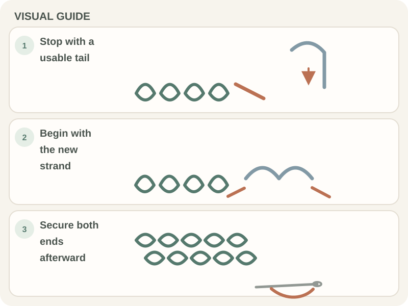

Stitches & Techniques · Beginner guide
How to Join New Yarn in Crochet
Join a new skein at a stable point, leave a tail for weaving, and follow the pattern’s preferred joining method.

A yarn join can add bulk or leave a gap if it lands mid-stitch. For many projects, the start of a row is easier to finish neatly; colorwork may require a different spot.
Before you begin
Check that the replacement yarn has the same weight and, when appearance matters, the same dye lot. Unwind enough yarn to leave a finishing tail before joining.
Step-by-step instructions
- Leave tails on both yarn strands for weaving in after the join.

Real crochet photograph by Anete Lusina via Pexels. - If your pattern does not specify another method, make a slip knot with the new yarn and place it on the hook. Insert the hook into the stitch or space named by the pattern, yarn over with the new strand, and draw it through the fabric and the loop on the hook. Make the turning chain or first stitch the pattern calls for.
- Keep both tails available; weave them in separately after checking the join.
- After a few stitches, check the join for a gap, lump, or puckering. Use the pattern’s specified joining method if it differs.

How to check your work
The fabric should stay even across the join, with no loose opening and no tight puckering. Tug the tails gently before trimming, then inspect again after the next row.
Common beginner problems
- A hole forms at the join: Undo to the join and secure the tails through nearby stitches; avoid pulling the fabric edges together too tightly.
- The join is bulky: Try placing it at a seam or row edge if the pattern permits, and weave tails in separate directions.
- The new skein looks different: Check dye-lot information; color can vary between lots even when the shade name matches.
Choosing a join point
If the project has a seam, a yarn change can often be hidden there. For visible fabric, follow a tested pattern method and inspect the right side before continuing. There is no single join that suits every fiber or project.
Frequently asked questions
Can I tie the two ends together?
A knot can create a hard spot and may loosen. Use the pattern’s join and weave-in method unless it specifically calls for a knot.
How long should the tails be?
Leave enough length to weave securely; the exact amount depends on yarn thickness and the finishing method.
Can I join in the middle of a row?
Yes, if needed, but consider visibility and leave tails to secure the spot.